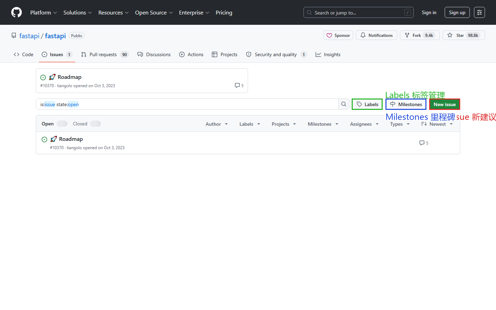
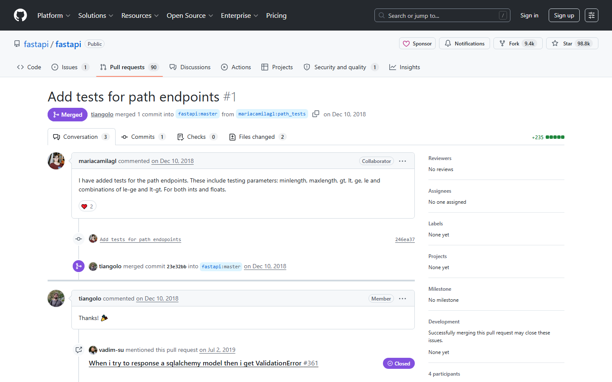

第四课：Issue（上）— 创建与管理
时长：25 分钟 | 前置：第二课 | P0 词条：18 个 | 覆盖 UI 元素：24 个
学习目标
学完这节课，你能：
- 理解 Issue 是什么、什么时候用
- 创建一个格式规范的 Issue
- 使用 Markdown 编辑器让 Issue 更清晰（代码块、列表、图片）
- 使用 Label 给 Issue 打标签分类
- 理解 Milestone 和 Assignee 的用途
0. 开场（2 min）
画面：打开一个活跃仓库的 Issues 页面（推荐 ant-design 或 kubernetes）

旁白：
"Issue 可能是 GitHub 上除了代码以外最重要的功能。它有以下几个面：
- 给开源项目报 Bug
- 提功能请求
- 问问题（虽然不是最佳方式）
- 讨论设计方案
Issues 就是一个项目的'事务中心'。今天这节课，我们来学会它的方方面面。"
1. Issue 列表页（5 min）
画面：打开 Issues 标签页

1.1 列表页布局
| 元素 | 英文 | 中文 | 作用 |
|---|---|---|---|
| 顶部搜索框 | Search all issues | 搜索 Issue | 在当前项目 Issue 里搜索 |
| 过滤器按钮 | Filters | 过滤器 | 按 Label / Milestone / Assignee 等过滤 |
| 绿色按钮 | New issue | 新建 Issue | 创建新 Issue |
| 标签切换 | Open / Closed | 打开中 / 已关闭 | 看还没解决的，还是已经关掉的 |
1.2 每个 Issue 条目的信息
| 元素 | 说明 |
|---|---|
| 绿色圆圈 ⬤ | Open（打开的 Issue） |
| 红色圆圈 ⭕ | Closed（已关闭的 Issue） |
| 紫色对勾 ✅ | Closed as completed（作为已完成关闭，Projects 功能中常见） |
| Issue 标题 | 点击进入该 Issue 详情页 |
| Label 彩色标签 | 贴在标题后面的彩色小方块，表示分类 |
| #数字 | Issue 编号，比如 #1234 |
| 下方灰色文字 | 谁在什么时间打开的（opened by XX on YY） |
| 💬 数字 | 有几条评论 |
| 右边头像 | Assignee（被指派解决这个问题的人） |
1.3 Label 彩色标签解读
画面：鼠标指向各种彩色标签
| 常见 Label | 颜色 | 含义 |
|---|---|---|
| bug 🟥 | 红色 | 程序出错了 |
| enhancement 🟦 | 蓝色 | 功能改进请求 |
| documentation 🟧 | 橙色 | 文档相关问题 |
| good first issue 🟩 | 绿色 | 适合新手贡献者 |
| help wanted 🟨 | 黄色 | 需要人帮忙 |
| duplicate 🟪 | 紫色 | 和已有 Issue 重复，会关闭 |
| wontfix 🟫 | 灰色 | 不打算修 |
每个项目的 Label 都不同。上面这些是社区常用的约定，但具体项目可以自定义。
1.4 过滤和搜索
| 操作 | 说明 |
|---|---|
| 点 Label 彩色标签 | 只看有该标签的 Issue |
| 搜索框输入 | 搜索标题和正文 |
| 点 Filters | 展开过滤器：按 Author / Label / Milestone / Assignee / Sort 过滤 |
2. 创建 Issue（8 min）
画面：点击绿色 New issue 按钮
2.1 创建流程
| 步骤 | 操作 | 说明 |
|---|---|---|
| 1 | 填写 Title（标题） | 用一句话说清楚是什么问题 |
| 2 | 填写正文（Write） | 详细描述，用 Markdown 格式（下节详讲） |
| 3 | 点 Preview 标签 | 预览正文的渲染效果 |
| 4 | 右侧配置 | Assignee / Labels / Projects / Milestone（看需要） |
| 5 | 点绿色 Submit new issue | 发布 |
2.2 标题怎么写
| 好标题 | 差标题 | 原因 |
|---|---|---|
Select dropdown does not close after choosing an option |
Bug |
太模糊 |
Add dark mode support to login page |
Feature request |
没说是要什么功能 |
Documentation for API/usersis missing error codes |
Doc |
没说哪有问题 |
公式：「什么东西」+「出了什么问题」（Bug）/「什么东西」+「希望变成什么样」（Feature）
2.3 Markdown 编辑器（重点！）
画面：鼠标逐个指向编辑工具栏按钮
| 按钮 | 图标 | Markdown 语法 | 效果 |
|---|---|---|---|
| Bold | B | **粗体** |
粗体 |
| Italic | I | *斜体* |
斜体 |
| Heading | H | ## 标题 |
不同级别标题 |
| Link | 🔗 | [文字](网址) |
链接 |
| Image | 🖼 | 拖拽或粘贴图片 | 嵌入图片 |
| Numbered list | 1. | 1. 第一项 |
有序列表 |
| Bullet list | • | - 项目 |
无序列表 |
| Task list | ☑ | - [ ] 待办 |
可勾选的任务列表 |
| Quote | " | > 引用 |
引用文字 |
| Code | <> | `代码` |
行内代码 |
| Code block | 矩形 | ```...``` |
代码块（支持语言高亮） |
2.4 两个重要技巧
技巧 1：粘贴图片自动上传
截图后 Ctrl+V 直接粘贴到正文，GitHub 自动上传。比手动上传方便 100 倍。
技巧 2：Markdown 任务列表
- [ ] 第一步要做的事
- [x] 已经做完的事
在正文中可以创建可点击的待办清单。勾选会更新进度。
操作演示：
【录屏】创建 Issue：填标题 → 写正文（演示代码块、图片粘贴、任务列表）→ 点 Preview 看效果 → 点 Labels 选择
bug→ 点 Submit new issue
3. 右侧配置项（5 min）
3.1 Assignees（指派）
| 概念 | 说明 |
|---|---|
| 是什么 | 指定谁来处理这个 Issue |
| 能指派谁 | 仓库里有权限的人 |
| 能不能指派自己 | 可以（给自己领任务） |
| 不指派行不行 | 可以，不是必须的 |
3.2 Labels（标签）
| 操作 | 说明 |
|---|---|
| 点击 Labels | 展开当前仓库所有标签 |
| 搜索标签名 | 快速定位 |
| 点击一个标签 | 选中/取消 |
| 谁可以创建标签 | 有仓库写权限的人 |
| 在哪里管理标签 | Issues 列表页 → 右上角 Labels 按钮 |
3.3 Milestone（里程碑）
| 概念 | 说明 |
|---|---|
| 是什么 | 把一批 Issue 归到同一个目标下面 |
| 典型命名 | v1.0、Q3 Sprint、Beta Release |
| 有什么用 | 看进度："v1.0 里 80% 的 Issue 已经关了，快了" |
| 在哪里创建 | Issues 列表页 → 右上角 Milestones 按钮 → New milestone |
Milestone 包含信息：
| 字段 | 说明 |
|---|---|
| Title | 里程碑名称 |
| Due date | 截止日期（可选） |
| Description | 描述这个里程碑的目标 |
3.4 Projects（项目看板）
| 概念 | 说明 |
|---|---|
| 是什么 | 把 Issue 放到看板里，做任务管理 |
| 什么时候用 | 当 Issue 多了需要可视化管理时 |
这个在后面的项目管理课里详细讲。
4. 单个 Issue 页面（5 min）
画面：点进一个已创建的 Issue
4.1 页面结构
| 区域 | 说明 |
|---|---|
| 顶部标题 | Issue 标题 + #编号 + Open/Closed 标志 |
| 正文区 | Issue 的第一条内容 |
| 右侧面板 | Assignees / Labels / Projects / Milestone / Notifications |
| 评论区 | 所有讨论回复 |
| 底部输入框 | 发表评论（Write / Preview 两个标签） |
4.2 Issue 操作按钮（标题右边）
| 按钮 | 英文 | 作用 |
|---|---|---|
| Edit | Edit | 编辑 Issue 标题或正文 |
| Close issue | Close issue | 关闭 Issue（已解决或不再做） |
| ... 菜单 | — | 更多：Delete issue / Pin issue / Transfer issue / Lock conversation / Convert to discussion |
Close vs Delete：
- Close：关闭但不删除。是最常用的。被关闭的 Issue 还能搜索到、能引用。
- Delete：彻底删除。极少用。只有管理员能删。
4.3 评论功能
| 操作 | 说明 |
|---|---|
| 底部写评论 | 和创建 Issue 同样的 Markdown 编辑器 |
| @提及 | 输入 @用户名 通知某人来看 |
| #引用 | 输入 #123 链接到本仓库的第 123 号 Issue |
| 引用回复 | 点某条评论的 ... → Quote reply 引用原文 |
| 表情反应 | 每条评论下面可以点 ❤️👍👎😄🎉😕🚀 |
| 编辑评论 | 自己发的评论右上角 ... → Edit |
| 删除评论 | 自己发的评论右上角 ... → Delete |
课后作业
- 在自己创建的仓库里（或 fork 一个练习用仓库），创建一个 Issue：
- 标题描述一个假想的 Bug
- 正文用到：代码块、图片、列表
- 打上一个 Label，指派给自己
- 创建另一个 Issue，正文里
#引用第一个 Issue 的编号 - 在别人的开源仓库里找 3 个 Issue，观察标题和标签的使用
本课术语速查
{.glossary-table}
| 英文 | 中文 | 出现位置 |
|---|---|---|
| Issue | 议题 | 顶部标签栏 |
| New issue | 新建 Issue | 绿色按钮 |
| Open | 打开中 | Issue 状态 |
| Closed | 已关闭 | Issue 状态 |
| Title | 标题 | Issue 创建页 |
| Preview | 预览 | Markdown 编辑器标签 |
| Assignee / Assignees | 被指派人 | 右侧面板 |
| Label / Labels | 标签 | 右侧面板 |
| Milestone | 里程碑 | 右侧面板 |
| Submit new issue | 提交新 Issue | 绿色提交按钮 |
| Edit | 编辑 | Issue 操作按钮 |
| Close issue | 关闭 Issue | Issue 操作按钮 |
| Delete issue | 删除 Issue | ... 菜单中 |
| Pin issue | 置顶 Issue | ... 菜单中 |
| Quote reply | 引用回复 | 评论 ... 菜单 |
| Good first issue | 适合新手的 Issue | Label 常见标签 |
| Duplicate | 重复（的 Issue） | Label 常见标签 |
| Mention / @ | 提及/艾特某人 | 评论中 @用户名 |